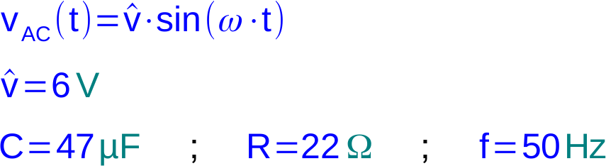
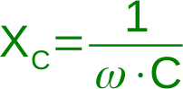

Aufgabe i.1
(Schwierigkeitsstufe 1)
Zeitaufwand: 20 Minuten

Die rechts abgebildete Parallelschaltung aus einem Kondensator und einem Widerstand liegt an einer
sinusförmigen Wechselspannung.
Es gilt:

Der Gesamtstrom iges(t) ergibt sich aus der Addition der Ströme iR(t) und iC(t).
Der Blindwiderstand des Kondensators kann durch folgende Formel errechnet werden:

|
a) |
Geben Sie die Formeln (Funktionsgleichungen) für den zeitlichen Verlauf von iR(t) und iC(t) basierend auf den oben angegebenen Bauteil-Werten an. |
|
|
b) |
Zeichnen Sie die Funktionsverläufe von iR(t) und iC(t) in ein geeignetes Diagramm. |
|
|
c) |
Zeichnen Sie ein maßstäbliches Zeigerdiagramm für die Ströme bezogen auf die Spannung. (Der Spannungszeiger verläuft horizontal.) |
|
|
d) |
Bestimmen Sie mit Hilfe des Zeigerdiagramms die Amplitude des Gesamtstroms iges(t) und die Phasenverschiebung bezogen auf die Eingangsspannung vAC(t) |